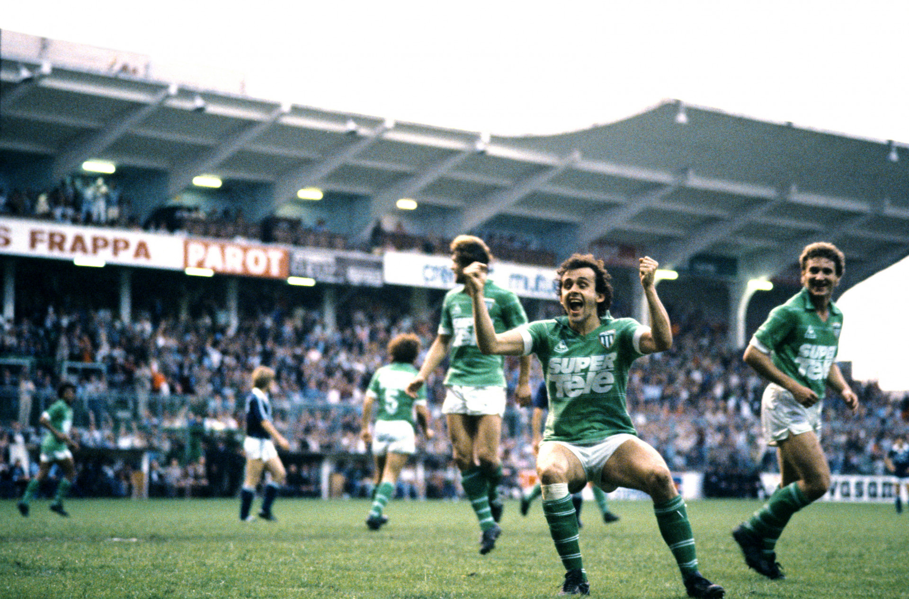
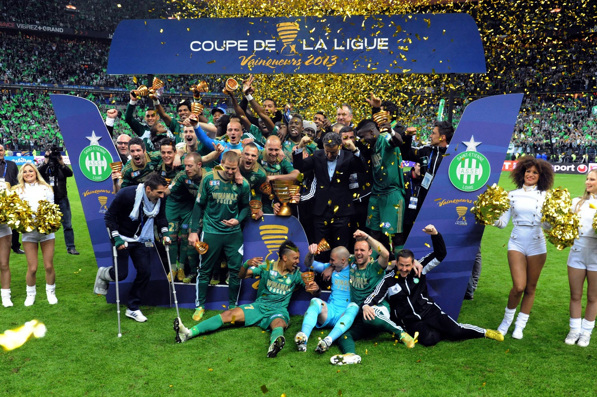

EFFECTIF
GARDIENS
DEFENSEURS
MILIEUX
ATTAQUANTS
COACH / STAFF
PALMARES
MAILLOTS
2026
ICONIQUES
BOUTIQUE
RÉSULTATS
CALENDRIER
CLASSEMENT
RETOUR EN IMAGES
BILLETERIE
HERITAGE
HISTOIRE
LEGENDES
LOGOS
SPONSORS
PALMARÈS
Palmarès Masculin
Championnat de France — 10 titres
1957
1964
1967
1968
1969
1970
1974
1975
1976
1981

Coupe de France — 6 titres
1962
1968
1970
1974
1975
1977
Coupe de la Ligue — 1 titre
2013

Trophée des Champions — 5 titres
1957
1962
1967
1968
1969
Coupe Charles Drago — 2 titres
1955
1958
Trophée de Ligue 2 — 3 titres
1963
1999
2004
Palmarès Jeunes
Coupe Gambardella — 4 titres
1963
1970
1998
2019